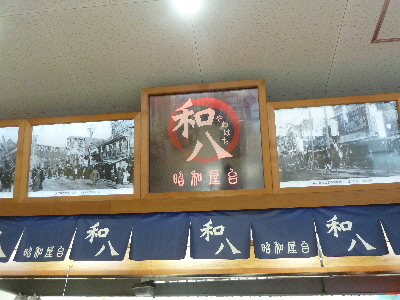
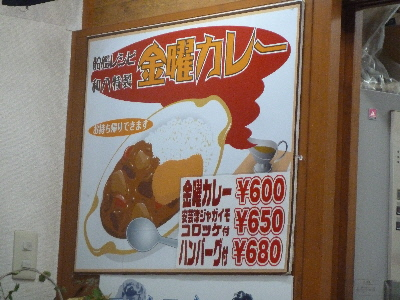

和八で金曜カレーを食べました。
2016/10/22
呉で海軍カレーを食べようと思ったんですが、旅先のランチで時間をかけたり、無駄に高い料金を払うのは嫌だったのでビル内の屋台で手軽にいただきました。

戦艦レシピ金曜カレーは600円と観光地にしては良心的な値段です。
コロッケつけてもハンバーグ付けても安いです。
野菜の甘みがあって、美味しい家庭料理風なカレーでした
。
昭和な感じで呉の観光にもぴったりかな。

海自カレーじゃなくて、戦艦レシピって名前がなんか気になりました。
呉観光協会は海自カレーって言うんですね。
大日本帝国海軍が海軍カレー
海上自衛隊は海上自衛隊カレー
横須賀市は海軍カレー
商標とお金がからんでいるのか、色々名前がありますね。
そう思うと誰かが勝手につけた名前に魅力はないなー。
カレーは安くて美味しいものを食べるのが一番だなって思いました。